Chapter 2 — Literature Review & Background
Archived per Osman 2026-06-01: Fig 2.2 (QE taxonomy), Fig 2.3 (Dense vs Sparse) — well-known concepts; prose suffices. Sources kept in archive/system_diagrams_dropped/.
Fig 2.1 retained per Osman's FIGURE_NOTES §1 — wants to keep + add companion showing QE-layer position in RAG.
Fig 2.1RAG system architecture§2.1
Query → Retriever (← Corpus) → LLM → Answer. Reader's introduction to the RAG framework.
TikZuse as-is
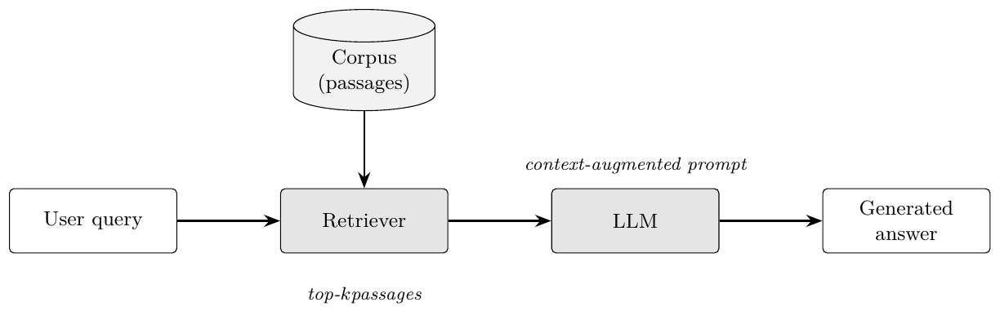
Mohammed FIGURE_NOTES §1: keep + add a companion diagram showing where the QE layer sits.
Table 2.1 — Reviewed QE papers (13 entries). §2.4 · compiled · Source: data/raw/table_2_1_papers.csv
Table 2.2 — LLM models used (11 entries). §2.5 · compiled · Source: data/raw/table_2_2_models.csv
Chapter 3 — Methodology
Archived per Osman 2026-06-01: Fig 3.2 (MIRACL dataset) — §3.2 prose covers this. Fig 3.6 (BM25 query repetition) — one equation + Fig 4.7 sweep already shows the effect.
Fig 3.1End-to-end thesis pipeline§3.1
Query → QE layer → BM25 + mDPR (parallel) → fusion (CC/RRF) → Top-k → evaluation.
TikZuse as-is
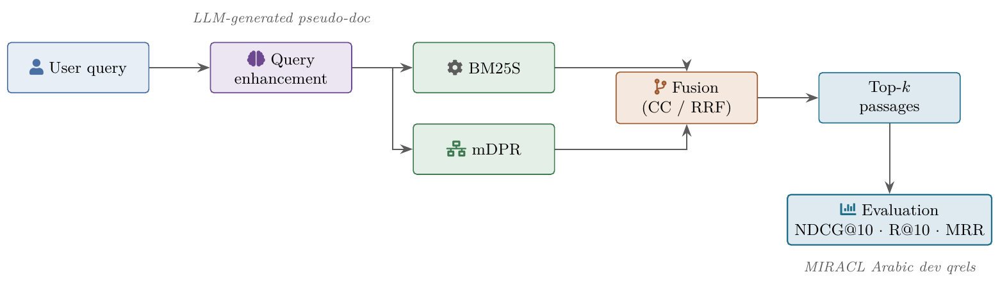
Fig 3.3BM25S indexing flow§3.4
Corpus → Arabic tokenizer + PyStemmer → stopword removal → BM25S index (k₁=0.9, b=0.4).
TikZuse as-is
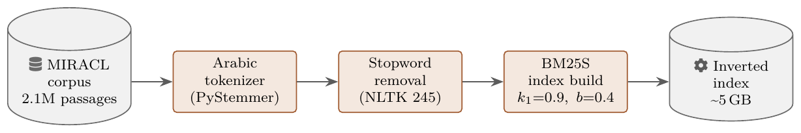
Fig 3.4mDPR encoding flow§3.5
Query batch → mDPR encoder (FP16, GPU) → 768-d vectors → FAISS inner-product search → ranked passages.
TikZuse as-is
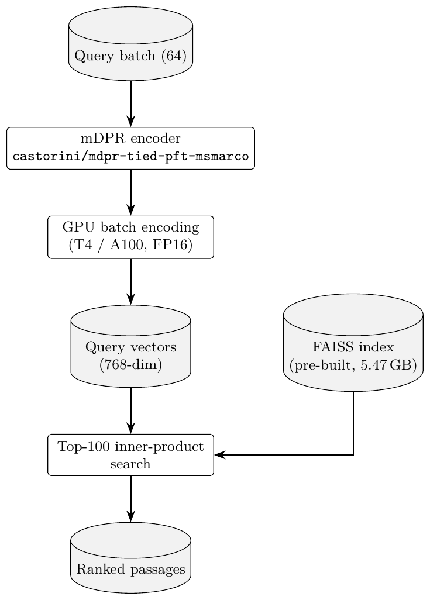
Fig 3.5Query2Doc generation§3.6
Query → prompt template → LLM (zero-shot, ~128 tokens) → pseudo-document → concatenate → retrieve.
TikZuse as-is
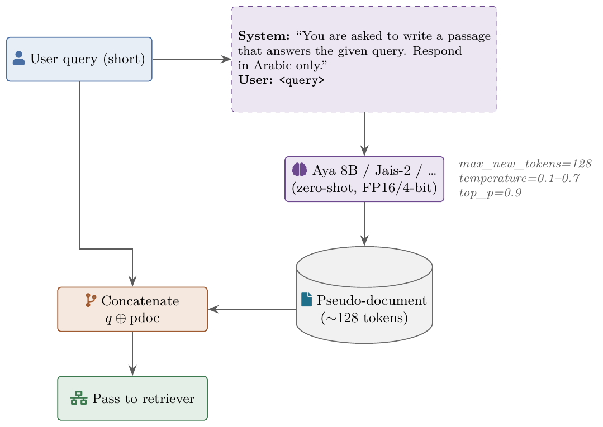
Fig 3.7Hybrid fusion: CC and RRF§3.7
Side-by-side fusion methods with equations. CC: α-weighted sum of normalised scores. RRF: reciprocal-rank sum.
TikZuse as-is
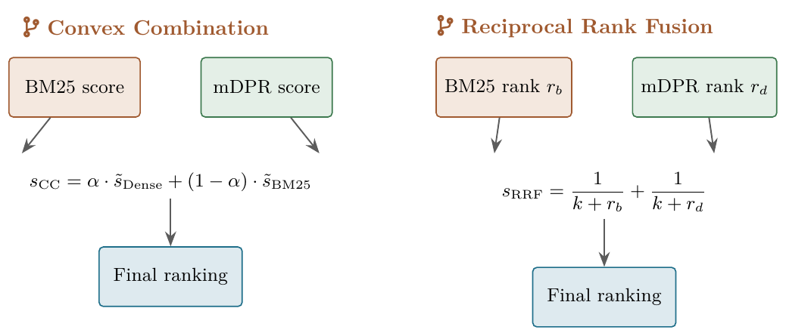
Fig 3.8CSQE pipeline (three-stage)§3.8
Stage 1: BM25 first-pass top-5. Stage 2: corpus context → Aya LLM → corpus-grounded pseudo-doc. Stage 3: q^α ⊕ pdoc → BM25 second-pass.
TikZuse as-is
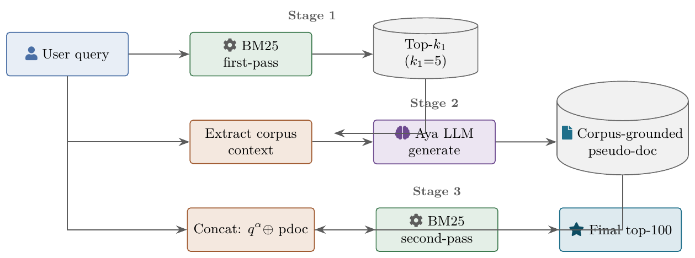
The main methodology diagram. Color-coded stages.
Fig 3.9Best system architecture (BM25-only-expanded RRF k=20)§3.8.3 / §4.7
CSQE-expanded query → BM25; original query → mDPR; RRF fuses both. NDCG@10 = 0.714.
TikZuse as-is
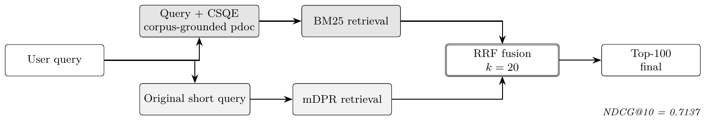
Table 3.1 — Per-model hardware config (9 rows). §3.6 · compiled · Source: data/raw/table_3_1_hardware.csv
Table 3.2 — Per-model generation hyperparams (9 rows). §3.6 · compiled · Source: data/raw/table_3_2_gen_hyperparams.csv
Chapter 4.3 — Model Comparison (Dense)
Table 4.2 — 10 models, Dense Query2Doc. §4.3 · complete · Osman's 5 models now have full R@10/R@100/MRR (from OSMAN_MODEL_COMPARISON_RESULTS.md).
Fig 4.5Sorted NDCG@10 across 10 LLMs§4.3
All 10 Q2D models; Aya 8B top (0.616) on Dense. v3 grouped variant now populated with Osman's R@10 + MRR.
Recommended: v1 (vertical).
v3 grouped★★
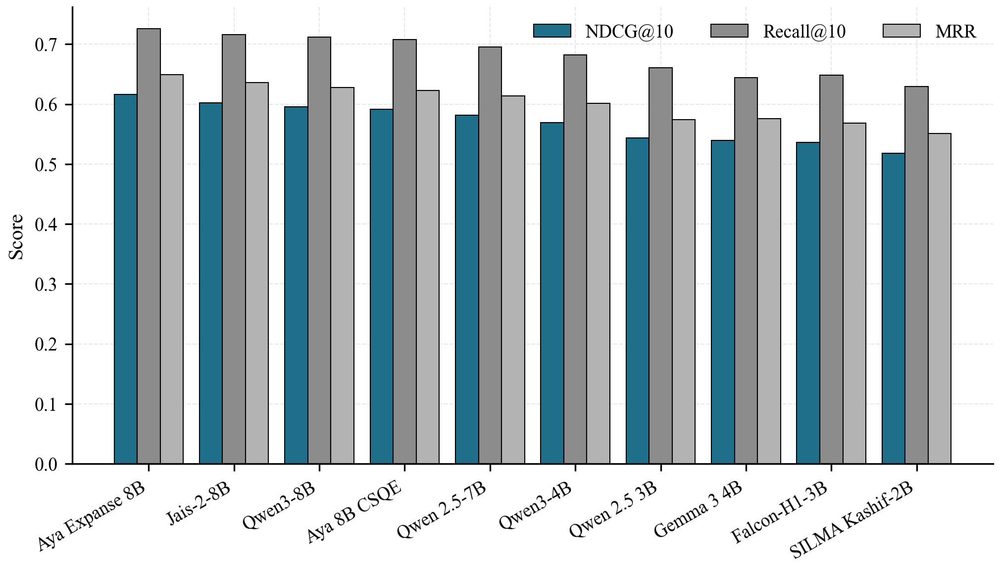
Fig 4.6Model size (B params) vs Δ NDCG@10§4.3
Tests whether bigger LLMs produce better pseudo-docs.
Recommended: v2 labelled + trendline.
v2 labelled★★★
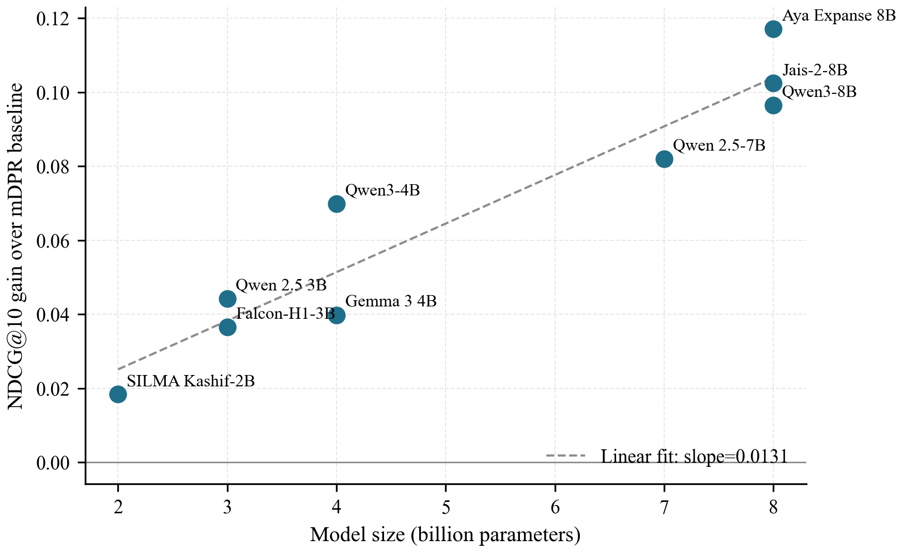
Chapter 4.4 — Model Comparison (BM25 + Repetition)
Table 4.3 — 9 models BM25 best configs. §4.4 / §4.6 · ready
Fig 4.7BM25 query-repetition sweep across 9 models§4.6
Each model's NDCG@10 vs n. 6 of 9 below baseline at n=1; all 9 recover at appropriate n.
Recommended: v1 line plot.
v1 multi-line★★★
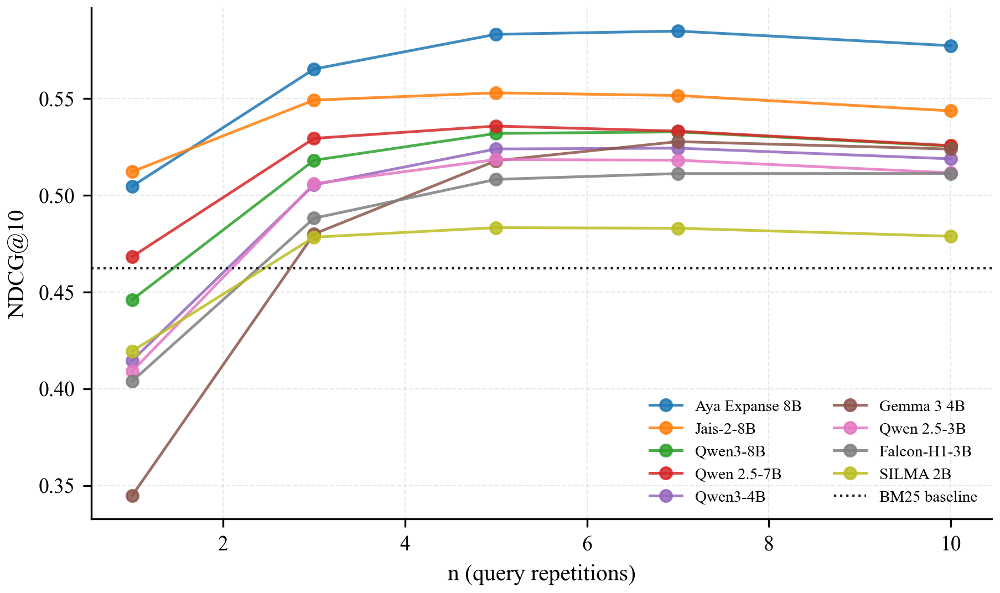
v3 heatmap★★
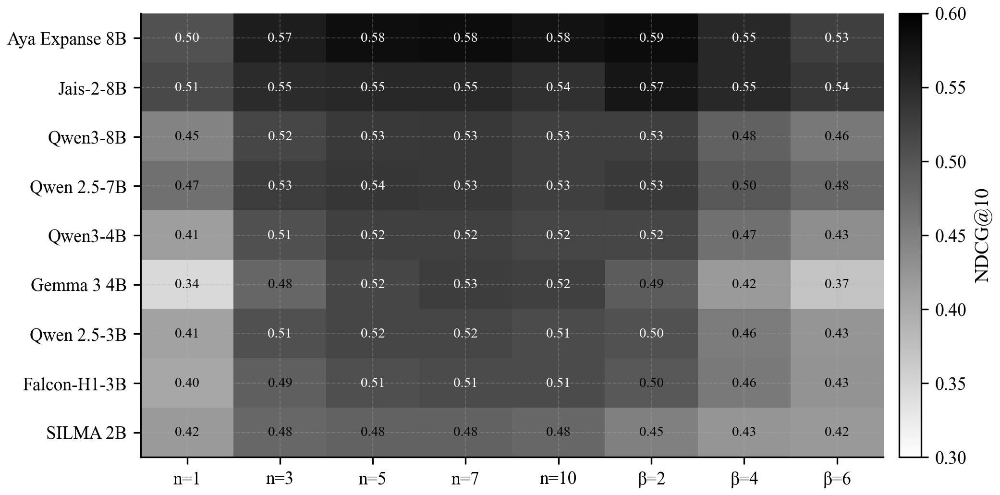
Fig 4.8Dense gain vs BM25 gain per model§4.6
Only Aya + Jais-2 help BOTH retrievers; most others only help Dense.
Recommended: v1 labelled scatter.
v1 scatter★★★
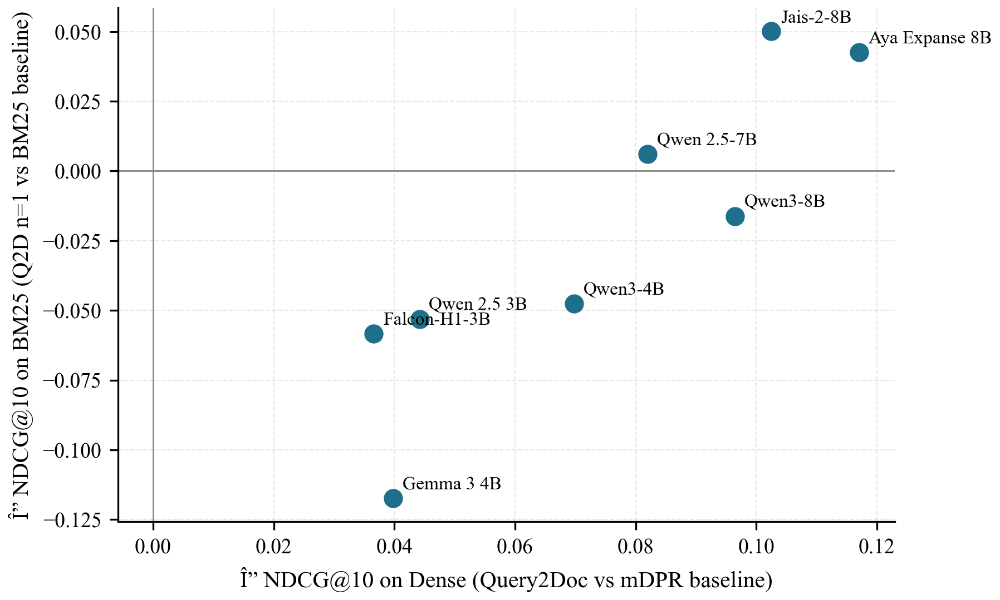
Chapter 4.8 — Error Analysis (CSQE)
Fig 4.12Per-query Δ NDCG@10 — CSQE+Hybrid vs Aya-blind§4.10
56.8% improve, 16.6% regress, mean +0.189.
Recommended: v1 histogram with bands.
Fig 4.13NDCG@10 by 1st-pass relevance (BM25 top-1, qrel ≥ 1)§4.10
1st-pass relevant n=1,061: 0.888. Not-relevant n=1,835: 0.581.
Recommended: v2 with sample-size annotations.
Fig 4.14Δ NDCG@10 by query length§4.10
CSQE+Hybrid lifts every length bucket; Short most proportionally (+43.6%), Medium most absolutely (+0.197).
Recommended: v2 grouped bars.
v2 grouped★★★
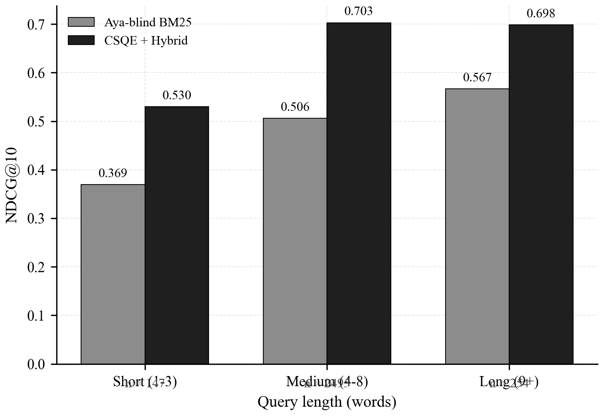
Fig 4.15Regression types breakdown (n=367)§4.10
Type A 52% / B 36% / C 12%. Teal/purple/gray palette.
Recommended: v2 donut.
v1 stacked★★
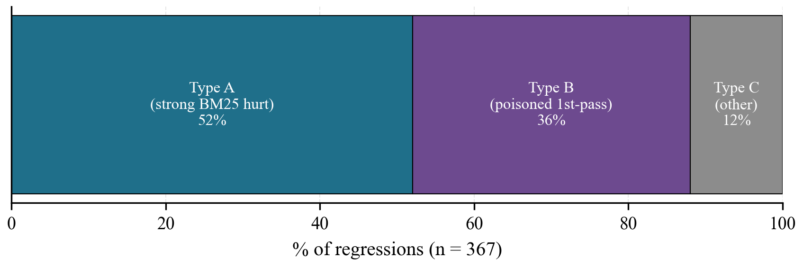